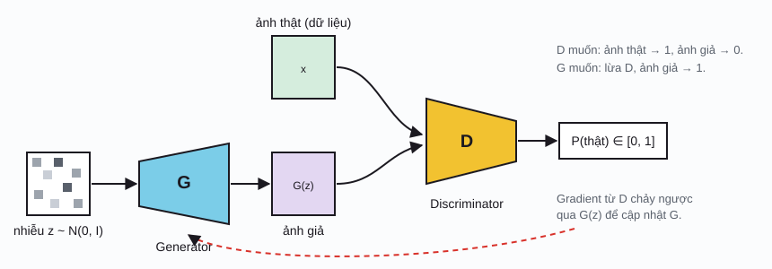

Transformer & genAI / Phần 2
AI tạo sinh
Mô hình phân loại trả lời "đây là gì?". Mô hình sinh trả lời câu hỏi khó hơn: "dữ liệu kiểu này trông như thế nào?", rồi tạo ra mẫu mới. Phần này đi qua bốn họ mô hình sinh chính: tự hồi quy, VAE, GAN và diffusion.
Mô hình sinh là gì
Một CNN phân loại ảnh học phân phối có điều kiện \(p(y \mid x)\): cho ảnh, đoán nhãn. Đó là mô hình phân biệt (discriminative model). Mô hình sinh (generative model) học chính phân phối của dữ liệu \(p(x)\), hoặc \(p(x \mid c)\) khi có điều kiện \(c\) như một câu mô tả. Học xong, ta lấy mẫu \(x \sim p_\theta(x)\) để ra dữ liệu mới.
Khó khăn: \(x\) có số chiều rất lớn (ảnh 512×512×3 có gần 800 nghìn chiều) và phân phối của nó cực kỳ phức tạp. Mỗi họ mô hình chọn một cách khác nhau để chia nhỏ bài toán này:
| Họ mô hình | Ý tưởng chia nhỏ | Sinh mẫu bằng cách | Ví dụ |
|---|---|---|---|
| Tự hồi quyautoregressive | Tách \(p(x)\) thành tích các xác suất có điều kiện, từng phần tử một | Sinh từng token, nối vào, lặp lại | GPT, Llama, PixelCNN |
| VAEvariational autoencoder | Dữ liệu được sinh ra từ một biến ẩn \(z\) ít chiều | Lấy \(z \sim \mathcal N(0, I)\), cho qua decoder | VAE, bộ nén ảnh trong Stable Diffusion |
| GANgenerative adversarial network | Không mô hình hóa \(p(x)\) trực tiếp; một mạng thứ hai làm "giám khảo" | Một lần chạy generator | StyleGAN, BigGAN |
| Diffusion | Học cách khử một chút nhiễu; lặp lại nhiều lần | Bắt đầu từ nhiễu, khử dần qua hàng chục bước | Stable Diffusion, DALL·E 2/3, Imagen, Sora |
| Normalizing flow, flow matching | Phép biến đổi khả nghịch (hoặc trường vận tốc) từ nhiễu sang dữ liệu | Giải một phương trình vi phân từ nhiễu | Glow, Stable Diffusion 3, Flux |
Sinh tự hồi quy
Quy tắc dây chuyền của xác suất cho phép viết xác suất của cả chuỗi thành tích các xác suất "token kế tiếp". Đây chính là thứ mà Transformer decoder ở Phần 1 tính ra: với mỗi vị trí, một phân phối trên toàn bộ từ vựng.
Huấn luyện bằng cross-entropy trên token đúng tiếp theo, giống hệt bài toán phân loại với |V| lớp. Nhờ mask nhân quả, một câu dài n token cho n bài toán phân loại cùng lúc trong một lần chạy.
Khi sinh, mô hình đưa ra logit \(z_i\) cho từng token. Cách chọn token từ phân phối này (giải mã, decoding) ảnh hưởng lớn đến chất lượng văn bản:
T: temperature. Top-k: chỉ giữ k token xác suất cao nhất. Top-p (nucleus sampling): giữ tập token nhỏ nhất có tổng xác suất ≥ p, nên số token giữ lại tự co giãn: ít khi mô hình chắc chắn, nhiều khi mô hình phân vân.
Chọn token kế tiếp
Chỉnh temperature, top-k, top-p rồi lấy mẫuKhông gian ẩn & VAE
Một autoencoder gồm encoder nén ảnh \(x\) thành vector ẩn \(z\) ít chiều, và decoder dựng lại ảnh từ \(z\). Nếu bạn đã quen CNN: encoder là chuỗi conv + pooling, decoder là chuỗi conv chuyển vị (transposed convolution). Vấn đề: autoencoder thường chỉ học "nhớ" mã của các ảnh huấn luyện, còn vùng giữa các mã là đất trống. Lấy một \(z\) ngẫu nhiên và giải mã thường ra rác.
VAE sửa điều này bằng hai thay đổi. Encoder không trả về một điểm mà trả về một phân phối \(q_\phi(z \mid x) = \mathcal N(\mu, \sigma^2)\). Và hàm mất mát có thêm số hạng KL kéo phân phối đó về gần \(\mathcal N(0, I)\):
Đây là âm của ELBO (evidence lower bound). Cách viết \(z = \mu + \sigma\odot\varepsilon\) là reparameterization trick: đưa phần ngẫu nhiên ra ngoài để gradient vẫn chảy được qua \(\mu\) và \(\sigma\).
Không gian ẩn 2D
Kéo con trỏ z; so sánh AE và VAEVAE đứng một mình thường cho ảnh hơi nhòe, vì số hạng dựng lại thực chất là sai số bình phương trung bình. Nhưng ý tưởng nén ảnh vào không gian ẩn vẫn rất quan trọng: Stable Diffusion dùng một VAE nén ảnh 512×512×3 thành "ảnh ẩn" 64×64×4 (nhỏ hơn 48 lần) rồi chạy diffusion trong không gian đó (Phần 3).
GAN
GAN đặt hai mạng vào một trò chơi. Generator \(G\) biến nhiễu \(z\) thành ảnh. Discriminator \(D\) là một bộ phân loại nhị phân (thường là CNN) đoán ảnh là thật hay do \(G\) tạo ra. \(D\) càng giỏi bắt lỗi, \(G\) càng phải tạo ảnh giống thật.

GAN sinh ảnh sắc nét và rất nhanh (một lần chạy mạng), nhưng huấn luyện khó ổn định: hai mạng có thể dao động mãi không hội tụ, hoặc \(G\) rơi vào mode collapse (chỉ sinh vài kiểu ảnh lặp lại vì chúng đủ lừa được \(D\)). Vì thế trang này không làm minh họa huấn luyện GAN: một demo nhỏ trên trình duyệt khó phản ánh trung thực hành vi này. Từ khoảng 2021, diffusion dần thay thế GAN trong sinh ảnh; ý tưởng discriminator vẫn sống tiếp trong các hàm mất mát phụ (ví dụ khi huấn luyện VAE của Stable Diffusion) và trong các kỹ thuật tăng tốc diffusion.
Diffusion
Quá trình thuận: phá hủy dữ liệu bằng nhiễu
Ý tưởng của mô hình diffusion ngược đời mà hiệu quả: sinh ảnh từ nhiễu thì khó, nhưng biến ảnh thành nhiễu thì dễ. Quá trình thuận cộng một lượng nhiễu Gauss nhỏ ở mỗi bước, sau khoảng 1000 bước ảnh chỉ còn là nhiễu. Không có tham số nào cần học ở bước này.
βt: lượng nhiễu ở bước t (lịch trình nhiễu, noise schedule); ε ~ 𝒩(0, I). Vế phải cho phép tạo \(x_t\) ở bước bất kỳ chỉ bằng một phép tính.
Thêm nhiễu từng bước
Kéo t từ 0 đến 1000; đổi lịch trình nhiễuQuá trình ngược: học cách khử nhiễu
Ta huấn luyện một mạng \(\varepsilon_\theta(x_t, t)\) đoán xem nhiễu nào đã được cộng vào. Bài toán huấn luyện đơn giản đến bất ngờ: lấy ảnh thật, chọn ngẫu nhiên t, cộng nhiễu, bắt mạng đoán lại nhiễu bằng sai số bình phương. Mạng thường là U-Net (một CNN dạng encoder–decoder có kết nối tắt) hoặc gần đây là Transformer (DiT).
Vế phải: đoán nhiễu tương đương với ước lượng score \(\nabla_x \log p_t(x)\), hướng mà mật độ xác suất tăng nhanh nhất. Đi ngược nhiễu từng bước theo score, cộng thêm một chút nhiễu ngẫu nhiên, ta trượt dần từ nhiễu thuần về vùng có dữ liệu.
Minh họa dưới đây dùng dữ liệu 2D để thấy toàn bộ quá trình. Vì dữ liệu là hỗn hợp Gauss, score tính được chính xác bằng công thức, đóng vai "mạng hoàn hảo". Thuật toán lấy mẫu thì giống hệt mô hình sinh ảnh thật.
Khử nhiễu: từ nhiễu về dữ liệu
Bấm "Lấy mẫu"; đổi điều kiện và độ mạnh guidanceĐiều khiển bằng văn bản: classifier-free guidance
Để sinh ảnh theo prompt \(c\), mạng nhận thêm \(c\) làm đầu vào. Khi huấn luyện, thỉnh thoảng (khoảng 10% số lần) ta xóa prompt đi, nên cùng một mạng học được cả score có điều kiện lẫn không điều kiện. Khi sinh, ta phóng đại sự khác biệt giữa hai score:
w: guidance scale (Stable Diffusion thường dùng khoảng 5–9). w lớn: ảnh bám prompt sát hơn, nhưng kém đa dạng và dễ bị "cháy" màu. Thử w = 0, 1, 3, 8 với điều kiện "chữ thập" trong demo trên.
So sánh các họ mô hình sinh
| Tiêu chí | Tự hồi quy | VAE | GAN | Diffusion |
|---|---|---|---|---|
| Chất lượng mẫu | Rất cao (văn bản) | Thấp hơn, hay nhòe | Cao, sắc nét | Rất cao (ảnh, video, âm thanh) |
| Độ đa dạng | Cao | Cao | Dễ mode collapse | Cao |
| Tốc độ sinh | Chậm: n bước cho n token | Nhanh: 1 bước | Nhanh: 1 bước | Chậm: 20–1000 bước (có cách giảm) |
| Huấn luyện | Ổn định (cross-entropy) | Ổn định | Khó, dễ dao động | Ổn định (MSE) |
| Tính được \(p(x)\)? | Có, chính xác | Cận dưới (ELBO) | Không | Cận dưới / qua ODE |
| Dữ liệu hợp nhất | Rời rạc: văn bản, code, token ảnh | Liên tục, dùng làm bộ nén | Ảnh | Liên tục: ảnh, video, âm thanh |
Lịch sử
- 2013
VAE
Kingma và Welling công bố "Auto-Encoding Variational Bayes", đưa reparameterization trick vào học sâu.
- 2014
GAN
Ian Goodfellow và cộng sự đề xuất mạng đối kháng sinh. Mấy năm sau đó là "thời đại GAN" của sinh ảnh.
- 2015
Ý tưởng diffusion
Sohl-Dickstein và cộng sự lấy cảm hứng từ nhiệt động lực học không cân bằng, mô hình hóa dữ liệu bằng quá trình khuếch tán ngược. Lúc đó kết quả chưa gây chú ý.
- 2016
PixelCNN, WaveNet
DeepMind cho thấy mô hình tự hồi quy với tích chập nhân quả sinh được ảnh và giọng nói tự nhiên.
- 2019
StyleGAN, score matching
StyleGAN (NVIDIA) sinh khuôn mặt giống thật đến khó phân biệt. Song và Ermon đề xuất sinh mẫu bằng score với nhiều mức nhiễu.
- 2020
DDPM
Ho, Jain và Abbeel đơn giản hóa diffusion thành bài toán đoán nhiễu, đạt chất lượng ngang GAN. Song và cộng sự thống nhất diffusion và score bằng phương trình vi phân ngẫu nhiên.
- 2021–22
Guidance và latent diffusion
Dhariwal và Nichol: "diffusion beats GANs". Ho và Salimans đề xuất classifier-free guidance. Rombach và cộng sự chạy diffusion trong không gian ẩn của VAE, ra đời Stable Diffusion (8/2022), mã nguồn mở.
- 2022–24
ChatGPT, DiT, flow matching
ChatGPT (11/2022) đưa mô hình tự hồi quy đến công chúng. DiT thay U-Net bằng Transformer trong diffusion; flow matching (Lipman và cộng sự) trở thành nền tảng của nhiều mô hình ảnh và video mới.
Tài liệu tham khảo
- D. P. Kingma, M. Welling, "Auto-Encoding Variational Bayes", 2013. arXiv:1312.6114.
- I. Goodfellow et al., "Generative Adversarial Nets", NeurIPS 2014. arXiv:1406.2661.
- J. Ho, A. Jain, P. Abbeel, "Denoising Diffusion Probabilistic Models", NeurIPS 2020. arXiv:2006.11239.
- A. Nichol, P. Dhariwal, "Improved Denoising Diffusion Probabilistic Models", 2021 (lịch trình cosine). arXiv:2102.09672.
- J. Ho, T. Salimans, "Classifier-Free Diffusion Guidance", 2022. arXiv:2207.12598.
- A. Holtzman et al., "The Curious Case of Neural Text Degeneration", ICLR 2020 (top-p). arXiv:1904.09751.
- Z. Xiao, K. Kreis, A. Vahdat, "Tackling the Generative Learning Trilemma with Denoising Diffusion GANs", ICLR 2022. arXiv:2112.07804.
- L. Weng, What are Diffusion Models? (bài tổng quan dễ đọc).